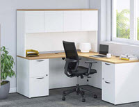
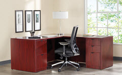
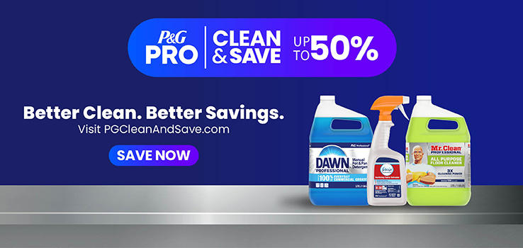
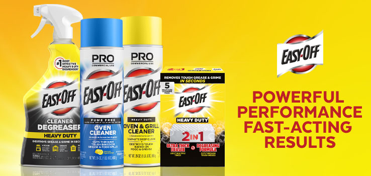

Local procurement command center
Office supplies, furniture, toner, machines, and local delivery for Hays-area workplaces.
Tri-Central helps local teams order everyday supplies, find the right ink and toner, outfit offices, and keep machines running.

Shop by job
Common workplace needs, routed quickly.
Paper, labels, filing, calendars, forms, mailing and shipping.
02Ink & TonerHP supplies and cartridge help when the model number is unclear.
03Office FurnitureDesks, seating, storage, workplace layouts, and quote support.
04Copiers & PrintersSavin inquiries, machine support, repair, and supply coordination.
05Janitorial & FacilityFacility basics for offices, classrooms, shops, and shared spaces.
06BreakroomCoffee, cups, plates, cleaning supplies, and kitchen restocking.
07Safety & PPEWorkplace safety products for daily operations.
08School SuppliesClassroom and administrative essentials for education teams.
09TechnologyPrinter supplies, machine accessories, and everyday office tech.
Hays, KS 67601
Fri 8-3, Sat by appointment
Furniture and workplace planning
Outfit offices without starting from a blank catalog page.
Tri-Central helps match desks, seating, storage, and workplace pieces to the way your team works. Bring a room, replacement, or refresh request and get local guidance before ordering.
Request Furniture Quote



Machines, toner, and repair
Keep copiers, printers, and office machines moving.
Get help with Savin inquiries, HP supplies and toner, printer support, machine service, and typewriter repair. If the catalog is not enough, call with the model number or bring the question to the local counter.
When the catalog is not enough